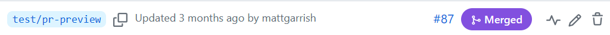
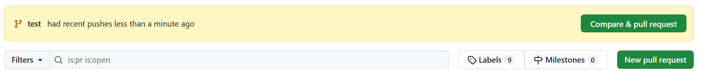
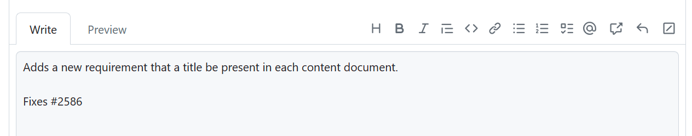

Finding people to write technical specifications is challenge enough, and the last anything wants when
taking on this kind of task is to be overwhelmed by the process of managing the documents. To help make
the process as smooth as possible, DAISY uses two widely implemented tools to help authors and editors
navigate the ins and outs of specification work: ReSpec and GitHub.
ReSpec is a tool that lets authors and editors focus on writing the text — it takes care of
formatting the document. Consequently, the only thing you have to know to write DAISY specifications is
some basic HTML. This guide introduces ReSpec and explains its authoring conventions.
GitHub is a content management system (CMS). Although commonly associated with coding projects, CMSes
provide a convenient way to author documents. The full authoring history of documents is always
available, for example, so you never have to worry about making mistakes. They are easily undone. GitHub
also allows others to review your changes before they are merged into a document.
Using GitHub can be a little more challenging than using ReSpec, but there are many user tools available
that can hide the technical details. This guide focuses on the underlying commands to help you
understand what happens at each stage of the process but is expected that you will use one of the
available tools to simplify the process.
2. Using GitHub
2.1 Introduction
GitHub is a cloud-based service that uses git repositories to store and manage development projects.
It is also a web site through which you can easily maintain repositories.
Although commonly thought of as a home for open-source code projects, GitHub is useful for any
project where versioning and tracking of documents is important. It is for this reason that DAISY,
W3C, and other publishers use GitHub for document development.
GitHub (the web site) includes some web-based tools for editing files in a repository, but it is more
common for developers to download repositories to their local machines to work on and then submit
their changes back to the site. This makes it easy to collaborate with others through the web site
and track what is happening.
This section goes through the process of checking out and working on the files in a repository, as
this is how you will manage the writing and editing of DAISY specifications. As there are many tools
available to simplify the document management process, this guide focuses on the underlying git
commands. Once you understand these commands, you will find it much easier to understand the
graphical user interfaces to GitHub.
2.2 Tools for managing repositories
The following list introduces some of the most common tools used to manage GitHub repositories. You
will need to install at least one of these tools before you will be able to checkout files and edit
them.
The git command line is the most basic way to interact with git repositories.
If you are comfortable with command line tools and do not mind memorizing the various git
commands, it may be all you need to manage your work locally.
The GitHub desktop is an application that runs on your local computer. It provides a
graphical user interface for checking out repositories and maintaining the files in them. As
it comes integrated with GitHub and sets up a connection with your user account, it is very
beginner friendly.
One bonus of installing GitHub desktop is that it will install the git command line for you,
so you can switch to the command line without having to run a separate install.
TortoiseGit is an application that runs on Windows systems. It integrates with your
right-click context menu, allowing you to manage repositories from the file system
explorer.
In addition to providing easy access to many common git commands, TortoiseGit also uses icon
overlays to display which folders and files have changes. Unfortunately, these overlays are
only accessible to sighted users.
Although the GitHub web site is not an installable application, and does not directly allow
you to download repositories, it does provide some basic tools for maintaining repositories
and editing files.
The GitHub site is the only way to open and comment on pull
requests, for example, so you cannot avoid using it. It also allows you to do light
modifications on files if you are in a hurry, but it is not recommended for extensive
editing.
2.3 Specification editing workflow
The typical GitHub workflow for editing a specification is as follows:
The image shows the top of the eBraille repository as it appears on the
GitHub web site. The green "Code" button is rendered at the right edge of
the page on a line of links and buttons after the repository name.
(Note for screen reader users that this "button" is actually a details
element styled like a button.)
From the drop-down menu, select "Open with GitHub Desktop" to download. (If you are
using a different application, this link should open that program instead; you do
not have to install GitHub Desktop for this step.)
The image shows the clone option that appears by default in the drop-down
menu box. The URL for the repository is shown followed by a link to open
with GitHub desktop and a link to download a ZIP file with the source.
You will be prompted where to save the repository on your local filesystem.
Note
Do not download the zipped source. This option only gives you the files without any of
the other necessary repository information for your git tools to work with them.
From the git command line:
Create a directory for your repositories if necessary.
Open the command line terminal for your operating system.
Switch to the directory from step 1.
Open the GitHub web site for the repository in your browser and copy the URL.
Clone the repository with the command:
git clone <URL>
Replacing "<URL>" with the URL from step 4.
Note
git will automatically create a new subdirectory for the source files using the name of
the repository.
Note
Another process for working on a repository is called forking. Forking a repository makes a copy
of the repository under your GitHub account. You then clone that repository and work on it and
make a pull request back to the source repository when you are done.
Forking is typically only used when you do not have access to edit the source repository. If you
need access to a DAISY repository, make a request to DAISY staff.
2.5 Branches
2.5.1 Overview
Branches are like copies of the repository source that allow you to work on files without
directly changing the primary source. After you have finished making all your changes, you
request that your changes be merged back into the source (through what is called a "pull request").
All DAISY specification should be done through branches and pull requests. Do not work directly
in the "main" branch (the primary source) as it does not give others a chance to review your
changes.
2.5.2 Create a branch
When creating a branch, try to give it a short but unique name. For example, name the branch
after the issue number it addresses.
You can also add a prefix using a slash to the name make branches more specific (e.g.,
"metadata/explain-title").
Note
Branch names must not contain spaces. Some tools will allow you to enter spaces in the name
but will convert them to dashes when creating the actual branch.
This section reviews creating branches from the GitHub web site and the command line, but most
applications for managing repositories can simplify this process for you.
The image shows the drop-down field after clicking on the main branch
button. There is a text input field followed by the names of some
existing branches.
The image shows the option to create the branch that appears once a name
has been typed into the input field.
Note
When creating a branch on the GitHub web site, you will need to pull the change to your local repository and switch to the branch before editing the files.
From the git command line:
Open the command line terminal for your operating system.
Switch to the root of the directory containing the repository source.
Make sure the "main" branch is checked out when creating new branches (see 2.5.3 Switching branches for more information).
Create and switch to the new branch with the command:
git checkout -b[branch-name]
Replacing "[branch-name]" with the name for your branch.
Push the new branch to GitHub with the command:
git push [branch-name]
2.5.3 Switching branches
Following are some common commands for switching branches from the git command line:
To switch to an existing branch, run:
git checkout [branch-name]
(Replacing "[branch-name]" with the actual name of the branch.)
To switch to the main branch, run:
git checkout main
To view the current branch you are in, run:
git branch --show-current
2.5.4 Deleting branches
If you are no longer using a branch, delete it — stale branches are confusing to sift
through later.
Note
Branches in DAISY repositories are typically set to be deleted automatically when a pull
request is merged. You do not need to delete these manually.
From the GitHub web site:
Go to the Code tab of the repository
Below the repository name is a count of branches. Click on this text to load the
list of branches.
The image shows the number of branches in the repository (3). The link is
beside the button to add branches.
Locate the branch you want to delete from the list on the new page.
Figure 7Branch entry with delete button

Description
The image shows an entry for a branch named "test/pr-preview". At the end
of the entry is the garbage can icon for deleting the branch.
Click on the garbage can icon next to the branch — the button has label
"Delete" followed by the branch name.
From the git command line:
To delete a branch from the command line, run the command:
git push origin –-delete [branch-name]
Replacing "[branch-name]" with the name of the branch to delete.
2.6 Managing changes
2.6.1 Pulling the latest updates
Running a "pull" command gets the latest commits, branches, etc., from the source repository.
To perform a pull command, run:
git pull
You should always run a pull command before starting new work on a specification to ensure your
copy of the repository is up to date.
Note
If you create a branch in GitHub, you need to run a pull command first before you can check
it out to work on it.
2.6.2 Committing changes
Committing your changes saves them with git. Some people like to commit often (e.g., with each
minor change) while other prefer to commit only when they are done all their changes. Either
approach is fine.
To make a commit, run:
git commit –a –m "explanatory message"
The "-a" flag in the preceding commands "adds" all changed files to your commit.
Although a bit counter-intuitive, you must "add" changed files even if they already exist in the
repository.
The "-m" flag indicates the commit includes an explanatory message. For DAISY
specifications, please always describe your commits. The description does not need to be long,
but should make clear what you are committing.
Note
Making commits does not push the changes to GitHub. Until you push them to the GitHub server, the changes will only exist in your local copy of
the repository.
2.6.2.1 File maintenance
Although most commits involve edits to a specification, it is also common to make changes to
the file structure of a repository (e.g., add images to a specification, or move or rename
files). The following list details some common file maintenance commands. Running these
commands still requires a commit.
To add a single file to the repository, run:
git add filename.xyz
To add all unversioned files, run:
git add -a
To check for unversioned files, run:
git ls-files --other
To delete a file, run:
git rm filename.xyz
To rename a file, run:
git mv oldname.xyz newname.xyz
2.6.3 Stashing changes
Sometimes you may need to change branches or work on another issue while in the middle of
editing. If you are not ready to commit the changes you have made, another option is to stash
them.
Stashing your changes stores them away in a stack and returns your branch to an unmodified
state.
When you return to the branch and are ready to continue editing, you can then "pop" the changes
from the stash. (Note that you can pop the changes anywhere you want, so you can also pop the
branches in a new branch if you prefer to start anew.)
The most common stash commands are:
To stash changes, run:
git stash
or
git stash save "reminder message"
It is best to add a message to remind you what you were working on, as it is easy to
forget what is in the stash if you have to go away to another issue for a long time.
To view the list of stashed changes, run:
git stash list
To pop the top-most changes, run:
git pop
2.6.4 Pushing changes
To store your changes (commits) on GitHub, you have to "push" them to the
server.
To push commits, run:
git push origin [branch-name]
Replacing "[branch-name]" with the name of the branch you are working in.
As with committing, some people prefer to push their changes often while others prefer to wait
until they are done. An advantage of pushing changes to GitHub often is that you know they are
securely saved in case anything happens to your machine. A disadvantage is that undoing a commit
once you have pushed it is more complicated (this is a bigger problem if you are working
directly in the "main" branch where changes can go live right away).
Note
Pushing your changes to GitHub does not open a pull request to review
and integrate your updates. That is the final step in the process.
2.7 Pull requests
Note
This section assumes you will use the GitHub web site, but GitHub Desktop can also manage pull
requests.
Many third-party tools, such as the git command line and TortoiseGit, are not able to create pull
requests in GitHub.
2.7.1 Opening a pull request
A pull request is the final step in the editing process. After you have made all your edits, you
need to open a pull request to have them merged back into the source specification.
To open a pull request from the GitHub web site:
Go to the "Pull requests" tab of the repository on GitHub.
GitHub should offer to open a new pull request for the changes. If not, click the "New
pull request" button.
Figure 8Alert to open pull request

Description
The image shows the alert field that appears when you go to the pull request tab
in GitHub after pushing changes to a branch. If this alert is no present, the
"New pull request" button is visible in the row of options beneath the
alert.
If the changes fix an issue in the GitHub issue tracker, add "Fixes #xx" to the
description (replacing xx with the actual issue number). This will automatically close
the issue when the pull request is merged.
Figure 10Example description for a pull request

Click the "Create pull request" button after the description box to open the pull
request.
Pull requests should always be reviewed by at least one other editor before merging. If you do
not request a review, editors may not be aware you want their input.
Note
It is best to pick editors also involved with the issue you are addressing, but if in doubt
never worry about asking for too many reviewers.
To request a review, follow these steps:
Go to the "Reviewers" section in the pull request tab and click on the cog beside the
heading.
A GitHub alert box indicates who has requested the review and provides a button
to add your review (opens the Files changed tab). A manual link to the files
changed tab is also in the row of buttons below the alert.
Review the GitHub diffs of the files. You can also go to the first comment in the pull
request to find links to an alternative preview and diff of the changes, but any
comments need to be made against the GitHub diffs.
To comment on a changed line, click the plus (+) button at the start of it (labelled "Add
line comment").
The image shows that the plus button for a line has been clicked and a new dialog
box is open where you can comment on the change. After entering a comment, the
"Add single comment" and "Start review" buttons beneath the input field become
active.
The first time you add a comment you will be asked whether you want to start a review or
leave a single comment. Chose "Start a review" if you expect to add more than one
comment, otherwise click "Add single comment".
When you have reviewed all the changes, click the "Finish your review" button to post
your comments.
The image shows the "Finish your review" button has been clicked and a new dialog
is open beneath it. It has a text input field for additional comments and
options to indicate you are approving, commenting, or requesting changes. The
"Submit review" button is last in the dialog.
If you did not add any comments, select "Approve" and then click the "Submit review"
button.
If you added comments, select "Comment" if they are only suggestions or "Request changes"
if they are problems that must be fixed.
Note
To make general comments not specific to the changed source, use the text box at the bottom
of the Conversation tab.
2.7.4 Editing a pull request
Sometimes you might want to make a change to another person's pull request – for example, to fix
a typo, or modify the text after a discussion.
Editing pull requests is no different from editing your own branches — you are just working
in someone else's branch.
The pull request is automatically updated with each commit; you do not have to reopen or update
it.
When editing someone else's pull request, make sure your commit messages thoroughly describe what
you are doing. You should also add detailed comments to the pull request.
2.7.5 Merging pull requests
If you are an editor, you can merge your pull request after receiving at least one approval.
If you are not an editor, let the editors decide when to merge.
To merge a pull request, go to the pull request tab, open the pull request, and click on the
"Merge pull request" button.
Note
When a pull request is merged, it may affect the ability to merge other open pull requests.
If GitHub is unsure how to merge the open changes with the ones that have been integrated,
it will flag you that there is a merge conflict.
GitHub allows you to edit merge conflicts from the web site, but if you are unsure about this
process, please contact DAISY staff to help.
3. Editing specifications
3.1 ReSpec
3.1.1 Introduction
ReSpec is a JavaScript tool developed by the W3C to make editing their specifications easier and
more consistent. The code allows you to focus on writing the content of the specification, while
it takes care of adding common boilerplate and formatting when the document is viewed live.
Although developed for W3C, ReSpec is no longer exclusively for developing W3C specifications.
DAISY, for example, customizes a "base" profile to format its specifications and notes.
The functioning of ReSpec is meant to be largely transparent to anyone editing specifications.
Using the tool only requires a script tag to call in the ReSpec code and a block of JSON
metadata to initialize it. Once these are set, editors will primarily be working in HTML to
author the content. This means you can use whatever HTML editor you are most comfortable
with.
This section covers the setup and initialization of ReSpec. Information on how to tag HTML
documents to take advantage of ReSpec's built-in formatting is covered in the next section on editing.
Note
For detailed information on all aspects of ReSpec, please visit the ReSpec Documentation.
3.1.2 Configuring a specification
Note
Configuring a ReSpec document for the first time is typically done by DAISY staff. You can
skip this subsection if you are not interested in how the code is set up.
3.1.2.1 Adding the code
The ReSpec source code is hosted at
https://www.w3.org/Tools/respec/respec-w3c
To call in this code, you only need to add a script tag to the HTML header.
Note the use of the class attribute value "remove" on the
script tag. This class ensures that ReSpec will remove the
script tag (i.e., itself) when exporting a static version of the
specification for publication.
ReSpec uses JSON metadata to initialize. This metadata is normally embedded in the
head of the HTML document using a script tag. Although it is
possible to import the metadata, doing so is not recommended. When stored outside the
specification, the metadata is often forgotten and not updated.
The script tag must contain a respecConfig variable definition,
which in turn must be an object. They key/value pairs in this object define the
initialization parameters.
The initialization metadata controls such aspects of the document as the links at the top of
the document (current version, previous version, etc.), the lists of editors and authors,
etc.
Setting the various metadata properties goes beyond this tutorial, however. Refer to the ReSpec Documentation for more information.
3.1.2.3 Confirming the ReSpec setup
Once the ReSpec code and initialization metadata are set, all you need to do to verify the
setup is open the document in a browser.
Note
Although you can open a ReSpec document on your local file system by double-clicking it,
it is often better to use a server like Apache or IIS to serve the document. If your
specification uses ReSpec file includes, for example, these will only work from a
server.
If the configuration is successful, you will get an HTML document with a table of contents on
one side and a ReSpec button positioned at the top left.
If the ReSpec button is present, there is nothing else you need to do but reload the document
to view your changes as you go. If you click on the ReSpec button, it only provides options
to export the specification (for publication) and to search for references.
If the ReSpec button is missing, then initialization failed. In this case, check the
browser's JavaScript console (in the browser tools) for more information. The most common
problem is invalid JSON in the initialization metadata (e.g., a missing comma).
3.1.3 Errors and warnings
ReSpec will alert you to any errors and warnings it can detect.
For errors, a red oval button with a number indicating the number of errors will appear beside
the ReSpec box at the top of the document.
Click on the oval to get a list of errors.
Warnings are the same, but the indicator is a yellow oval.
Make sure all errors are fixed. Not all warnings need fixing, but they need to be evaluated on a
case-by-case basis.
3.2 Sectioning specifications
3.2.1 Using sections
Section tags are an important part of structuring a specification, and you must author DAISY
specifications using section tags around each self-contained section of
content.
Every section tag should contain a unique ID in its id attribute.
Although ReSpec will add IDs if they are missing (with the value match the heading), relying on
this feature is strongly discouraged. If you later change your title, for example, links to it
will break if you rely on ReSpec's dynamic identifying.
The section tag is also used to differentiate informative content from normative content, as
described in more detail in the next two subsections.
In addition, every section must have a heading. Ensure that the number of heading tag matches its
nesting. The top-most sections in a specification must have h2 headings – ReSpec
uses h1 for the document title.
Note
ReSpec will attempt to correct misnumbered heading tags.
Use sentence case for headings — only the first letter is capitalized unless there are also
proper nouns in the title.
Do not add numbers your headings (e.g., "<h2>1. …</h2>"). ReSpec will
add the correct numbering based on whether the content is preliminary, body, or back matter.
Note
If a heading occurs without a section tag, ReSpec will attempt to add one to
match what it infers to be the correct structure (usually by making a subsection). Be
careful about relying on this kind of auto-correction.
3.2.2 Normative sections
All specifications are composed of normative and informative sections. Normative sections include
the requirements the author, reading system, etc. must follow.
In DAISY specifications, all sections are normative by default. You do not need to specially mark
these sections as normative.
Normative sections are composed of one or more requirements. These requirements must be
identified by special keywords identified in [rfc2119].
These keywords include:
MUST, MUST NOT, and REQUIRED – if the target
of the statement (content, reading system, etc.) does not meet these requirements it is
non-conforming.
SHOULD, SHOULD NOT, and RECOMMENDED – the target
of the statement should only deviate from these requirements if there is a good
reason.
MAY and OPTIONAL – meeting these requirements is at the
discretion of the author or developer.
Note
DAISY specifications should not use keywords SHALL and SHALL NOT. They are equivalent to
the "must" keywords and only add confusion.
Normative keywords must be in uppercase. Lowercase keywords have no normative weight, but it
best to avoid these as they confuse most readers.
3.2.3 Informative sections
Informative sections are for explanatory or illustrative content. They must not contain normative
statements and should avoid the lowercase equivalents (confuses readers whether the section is
misidentified as informative).
Informative sections must be identified by adding an "informative" class to them.
Be careful how you use the informative class. It applies to the section it is added to as well as
any subsections that section contains. Marking an entire introduction informative, for example, could incorrectly result in the conformance section and terminology
section becoming informative.
Note
Examples and notes are always considered informative – no special marker is needed.
3.3 Preliminary matter
3.3.1 Title and subtitle
The title of the specification is specified in the document's title tag.
ReSpec automatically generates an h1 in the body using the same value.
You can add an h1 tag with the id "title" to the body if you need html
tags in the title, but this is rare.
To add a subtitle, include an h2 tag with the id "title".
Note
Do not place the title and subtitle inside section tags.
Subtitling specifications is usually rare. Use an abstract to
describe the specification.
3.3.2 Copyright
ReSpec will automatically add a W3C copyright statement if one is not provided in the document.
To avoid this behavior, add a DAISY copyright statement after the opening body tag.
Note
If the document has a title or subtitle in the body, the copyright can proceed these
tags.
3.3.3 Abstract
ReSpec requires every document have an abstract that briefly explains the document.
To add the abstract, include a section with the id "abstract".
Note
Do not add a heading for the abstract. ReSpec will automatically add one.
The abstract should only be a few sentences at most. Leave longer explanations for an
introductory section.
If you are writing a document that does not need an abstract (e.g., a note), you can suppress the
section by adding the html hidden attribute. Removing the table of contents entry
requires scripting, however. Contact DAISY staff to help with this task.
3.3.4 Status of this document
DAISY specifications do not include status sections. Do not include a section tag
with the id "sotd" as this will trigger ReSpec to include W3C boilerplate.
Note
There is no way to overwrite the W3C boilerplate. ReSpec will append any text you write in a
status section after the boilerplate.
If DAISY specifications add status sections in the future, a new method for including them
will be developed.
3.3.5 Table of contents
ReSpec automatically generates the table of contents from the heading structure.
How many levels deep the table of contents go can be controlled by the initialization metadata, but it is best not to limit user access.
Individual sections can be omitted from the table of contents by adding the class
"noTOC" to them.
Note
You cannot use the noTOC class to suppress required sections, like the abstract.
3.3.6 Introductions
DAISY specifications should include an introduction section to group any additional preliminary
matter.
Do not mark the introduction as informative unless all the subsections it contains are also
informative.
The following sections explain the most common subsections found in the introduction, but you can
add any additional explanatory subsections you need.
3.3.6.1 Overviews and Backgrounds
An overview section provides you the opportunity to informatively describe the purpose, scope
and features of the specification in more detail than the abstract
allows. It is generally recommended to always include one in DAISY specifications.
Make sure mark the overview as informative.
DAISY specifications may also contain background sections, although these are not common. A
background section differs from an overview in that it delves into the problems that led to
creating the specification, for example, or outlines how the specification is a response to
previous efforts. The background should typically follow the overview.
3.3.6.2 Conformance
DAISY specifications must have a conformance section. This section should go after the Overview.
You should not include any text in the conformance section or give it a heading. ReSpec will
automatically populate the required text.
If you do add content to the section, ReSpec adds it after the boilerplate it generates.
Note
If you are writing an informative note, not a specification, omit a conformance section.
ReSpec will emit a warning, but this can be ignored.
3.3.6.3 Terminology
If your specification uses terms that need defining, add a terminology section in the
introductory material. This section typically follows the conformance section.
Within the terminology section, add a definition list (dl tag) to define the
terms.
Each dt must include a dfn tag around the term. This allows ReSpec
to harvest the terminology and simplify linking to terms.
Never include normative requirements in a terminology section! Users do not expect to find
implementation details in definitions. Add requirements to a section most applicable to the
term.
Note
Terminology is always considered a normative part of a specification even if it does not
contain normative requirements. Do not mark the section as informative.
Once a term is defined, you can reference it from an a tag anywhere in the
document. You do not have to include a href attribute.
Only the first instance of a term in a new section is linked to its definition.
ReSpec can handle differences in case between the link text and the defined term. It can also
account for most plural forms of words.
If you intend to use a shorthand expression of the term (e.g., "reading system" instead of
"eBraille reading system", you need to define the alternative in the term definition using a
data-lt attribute.
If there is more than one alternative, use a vertical bar (|) to separate the
terms in the attribute.
3.4 Body matter
3.4.1 How to write the body
Probably the toughest problem you will face when writing a specification is how to structure it
and what to write about.
Although there is no simple answer to how to write a specification, the best way to begin the
process is often to brainstorm a list of topics that you expect you will have to cover. Start by
coming up with a list of top-level concepts or technologies you expect to define and then work
at refining this list by filling in the subsections.
Do not worry about getting this initial outline perfect … finished specifications almost
never look anything like they did at the outset. You will only discover what you ultimately need
to add and how to arrange the information as you go.
Once you have an outline of topics, a useful next step is to think of a specification as a
teaching guide. You need to introduce your readers to the concepts in a logical sequence that
allows them to build on the aspects they have already learned. Try arranging your outline so
that readers do not depend on understanding concepts that are only explained later.
Finally, do not feel compelled to fill in a specification from top-to-bottom. Begin wherever you
feel most comfortable and work your way through. Some parts will be much easier to write than
others and will require less input from the group. Getting some easy wins will make the process
more rewarding than struggling with harder parts just because they come first.
Note
The rest of this section deals with writing conveniences provided by ReSpec.
3.4.2 Writing guidelines
Use the following guidelines when writing DAISY specifications:
Use US English spelling
Follow the Chicago Manual of Style grammar and formatting rules
Do not use contractions (don't, can't, etc.)
Do not use personal pronouns (I, we, you, etc.)
Write out acronyms the first time (except where the acronym has become an accepted word,
like HTML)
Do not use colloquialisms - assume an international audience
Prefer active voice ("Authors must …", "Reading systems must …"), but passive
voice is acceptable for specification writing
3.4.3 Cross-references
To cross-reference another section in your specification, use an a tag that
references the ID of the section.
If you do not put any text in the a tag, ReSpec will automatically add the number
and title of the section. (You can also use ReSpec's triple bracket shorthand for referencing
sections this way: [[[#id]]].)
3.4.4 References
3.4.4.1 To other specifications
When referencing elements, attributes, definitions, concepts, etc. another specification, you
must cite the specification.
ReSpec supports a shorthand syntax for specification references using two brackets on either
side of the specification's shortname: [[shortname]]
To find the shortname to use for a specification, go to https://specref.org (there is also a link to this page from the ReSpec button).
Specification references may be normative or informative. References inherit this designation
from the type of section they are in.
If informative references are used in normative sections, you must mark the reference as
informative by adding a question mark before the shortname.
Normative references are not allowed in informative content.
ReSpec automatically builds a references section in the back matter and sorts the references
into normative and informative subsections.
3.4.4.2 To elements and attributes
ReSpec also has a shorthand for linking to elements in other specifications using a bracket
and circumflex around the element's name: [^element^]
To reference an attribute, you typically add a slash after the element's name:
[^element/attribute^]
Note
ReSpec replaces the attribute shorthand with the attribute's actual name. In the previous
example, only "The src attribute" will appear in the rendered text.
Element and attribute shorthands are only available for HTML and SVG.
If you are unsure what shorthand to use, or are getting an error, go to https://respec.org/xref/ and make sure you have the
correct reference.
If more than one specification defines an element or attribute, you may need to tell ReSpec
which one you mean to reference by adding a data-cite attribute. The value of
this attribute is the same shorthand name you use to reference the
specification.
3.4.4.3 To concepts and definitions
Concepts and definitions are defined in dfn tags.
ReSpec has a shorthand for referencing these using a bracket and equals sign around the term:
[=term=]
Concepts can be defined either in the current specification or in another, like [infra] or
[url].
3.4.5 Adding notes
There are two main types of notes:
Regular notes
Regular notes are like asides … they are used to informatively describe issues to
readers.
To add a note, use the class "note".
You can also add a descriptive caption using the title attribute but, this
is not commonly done for notes.
If a note is only a single paragraph, you can use the note class directly on
the paragraph tag. The one downside of this approach is that it makes notes slightly
hard to spot visually when editing (the extra div wrapper makes the
paragraph stand out from any others around it.
Editor's notes
Editor's notes inform readers about issues that are still to be addressed in the
specification.
To add an editor's note, use the class "ednote".
Note
Editor's notes are only allowed while you are working on the specification. They must
be removed prior to final publication.
3.4.6 Adding examples
To add examples, use an aside tag with the class "example".
Use the title attribute to add a descriptive caption for the example. It is strongly
recommended to title examples to make it easier for readers to understand their purpose.
Use <pre> and <code> tags to wrap the example markup.
Note
Make sure to escape opening brackets in the example.
If necessary, you can add a more thorough description of the example using <p>
tags.
ReSpec will automatically number examples.
3.5 Back matter
3.5.1 Adding appendixes
Marking a section as an appendix changes its numbering to alphabetic and signifies it is in the
back matter.
To indicate a section is an appendix, add the class appendix to its
section tag.
Appendixes are not informative by default, but they are typically used for informative content.
An informative class must be added if the appendix is not normative.
Appendixes must be the last sections in the document. ReSpec will convert all sections after the
first marked as an appendix to appendices, whether you wanted them as appendixes or not!
3.5.2 Change log entries
ReSpec currently does not help you out with change logs.
Change log entries should be dated and provide a concise description of the change. Best practice
is to also include a link to the GitHub issue for each entry.
A change log may not be needed for a new specification but can help readers track changes since
the last publication.
3.6 Custom styling
Although ReSpec provides a default look and feel, it does not cover everything you may need when
writing a specification.
To use custom styling, simply add a style tag to the document header with the necessary
CSS.
Do not change the appearance of specifications just because you do not like the ReSpec defaults!
Limit custom CSS to unhandled needs.